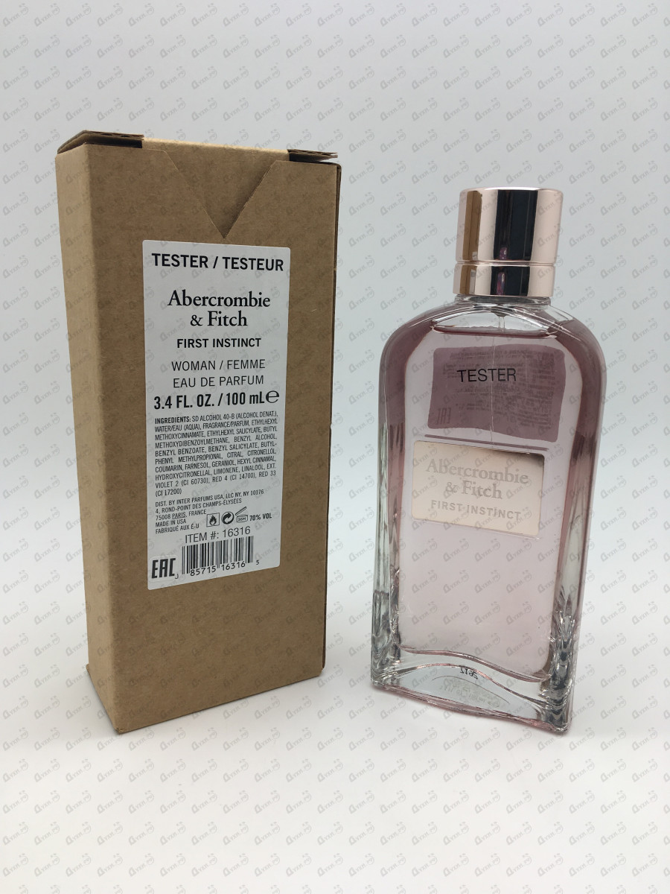

Полное описание:
Романтический, полупрозрачный розовый флакон скрывает в себе шикарный аромат Abercrombie & Fitch First Instinct For Her, упоительные чары которого сумели мгновенно завоевать сердца ни одного десятка искушенных мужчин и очаровательных женщин. Утонченная терпкость розового грейпфрута выступает в интересном тандеме с фруктовыми мотивами сладкой маракуйи. Экзотическое благоухание магнолии удачно дополняется знаменитым апельсиновым цветом. Интересная бабочковая орхидея подчеркивает легкость и соблазнительность парфюмерной композиции. Дымчатые бобы тонка ведут интересную игру с оттенками амбра, расставляя заключительные акценты и оставляя после себя неповторимый шлейф. Хотите произвести неизгладимое впечатление на понравившегося человека? Тогда добавьте к своему восхитительному образу капельку изумительного аромата Abercrombie & Fitch First Instinct For Her.